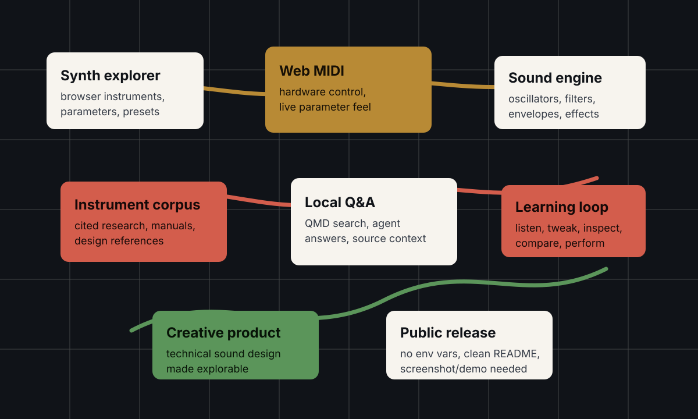
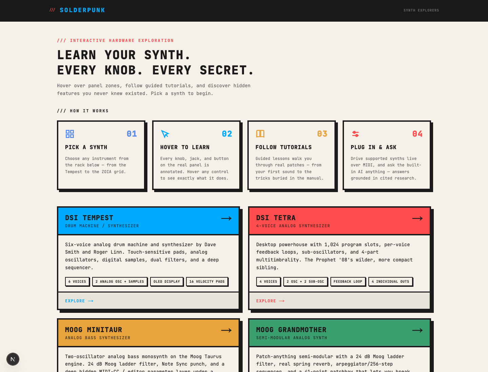
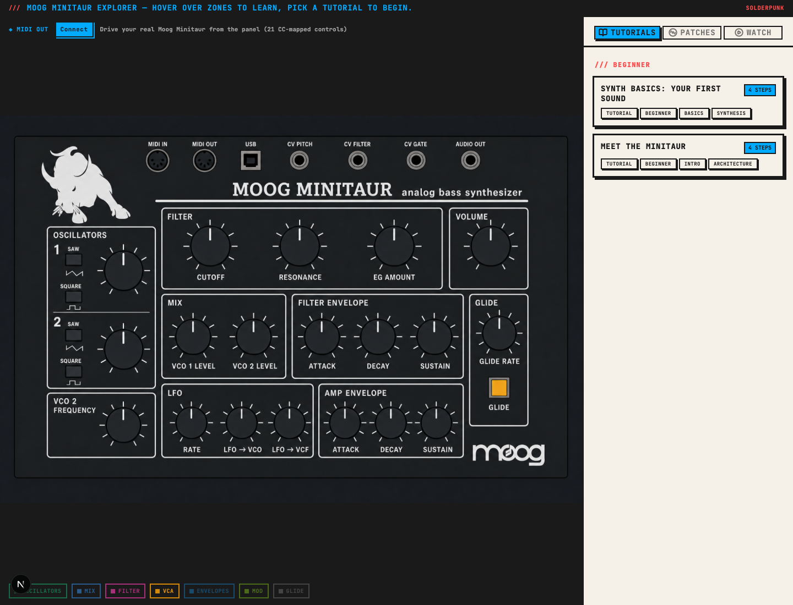
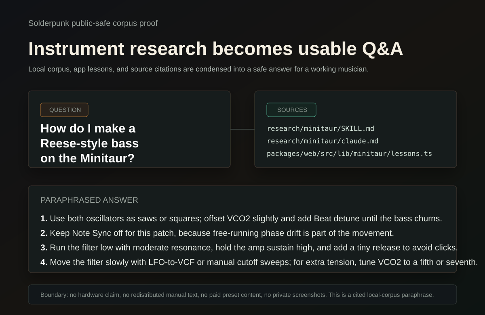

Problem
Synth research and sound design often sit in separate worlds: manuals, videos, hardware intuition, scattered references, and browser demos that do not feel like instruments. Solderpunk turns that material into explorable software for learning, tweaking, and playing.
What I Built
I built Solderpunk as interactive AI-assisted synth explorers with Web MIDI hardware control, cited instrument corpora, local QMD/agent Q&A, and no environment-variable dependency. I rewrote the README to frame it around supported instruments, quick start, live MIDI control, corpus search, architecture, and public-release needs.
- Instrument UXExplorable browser surfaces for parameters, presets, synthesis concepts, and live feedback.
- Hardware controlWeb MIDI turns the project from static explanation into a playable tool.
- Research loopCited corpora and local Q&A connect sound design decisions back to source material.
System Architecture




Technical Decisions
- Make synthesis concepts interactive instead of burying them in prose.
- Use Web MIDI so hardware control and UI exploration stay connected.
- Keep cited instrument research close to the interface through corpus search and local Q&A.
- Keep it legible and tasteful enough to publish as-is — the source is public.
What This Proves
Solderpunk shows creative tooling with real technical product taste: browser UI, musical domain judgment, hardware integration, local knowledge workflows, and a project shape that engineers can inspect without needing private business context.
Public Evidence
- README rewritten around portfolio signal.
- Public-safe system diagram included.
- Runtime screenshots captured for the landing page and two synth explorer routes.
- Corpus Q&A example captured with public-safe citations and paraphrasing.
- Web build passed; Tempest tests passed; lint completed with one existing image optimization warning.
- Proof transcript — available on request.
- Corpus proof — available on request.
- The source is public on GitHub.
Release Boundary
Check source citations, generated text, third-party assets, local file paths, and hardware assumptions before approving public visibility, profile pinning, or stronger CTAs for the existing gorkamolero/solderpunk repo.